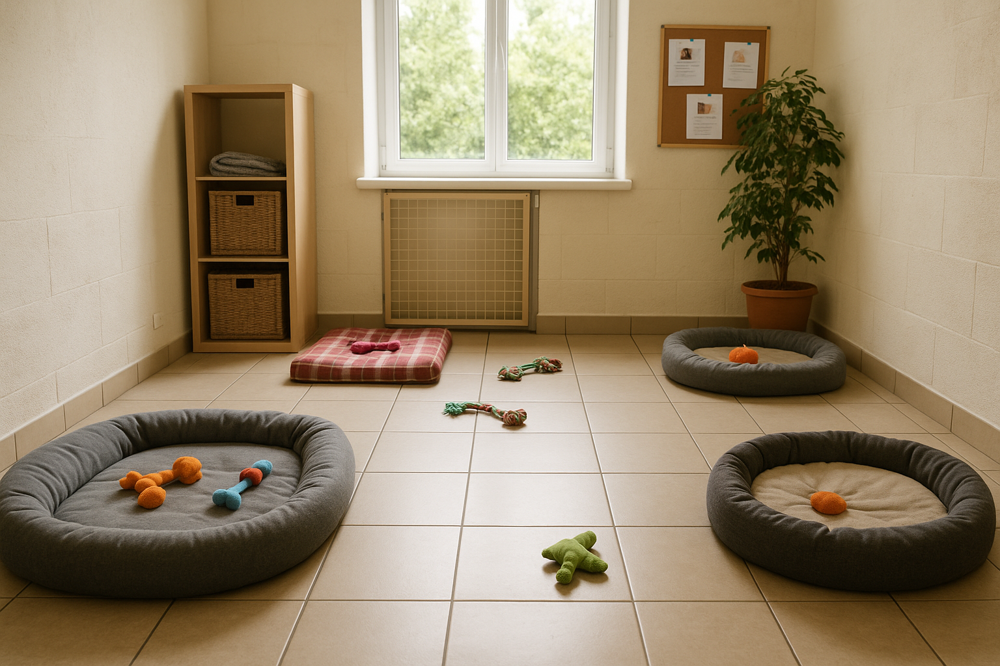

Sobre
Nossa História
Nascemos do desejo de transformar vidas – humanas e animais. Começamos como um pequeno grupo de voluntários apaixonados por pets abandonados e hoje somos uma rede comprometida com a adoção responsável e o bem-estar animal. Acreditamos que cada pet merece um lar cheio de carinho.
Missão
Promover a adoção e doação responsável de animais, garantindo cuidado, amor e respeito aos pets e às pessoas envolvidas nesse processo. Atuamos com empatia, compromisso e responsabilidade social.
Visão
Construir um mundo onde nenhum animal precise viver nas ruas ou em situação de abandono, e onde a adoção seja sempre a primeira opção considerada por quem deseja um novo amigo.
valores
- Empatia: Respeito e sensibilidade com todos os seres vivos.
- Comprometimento: Agimos com seriedade e dedicação em todas as etapas.
- Transparência: Atuamos com verdade e abertura em nossas ações.
- Responsabilidade: Tomamos decisões conscientes pelo bem-estar dos pets.
- Amor: Nosso principal motor é o amor pelos animais.